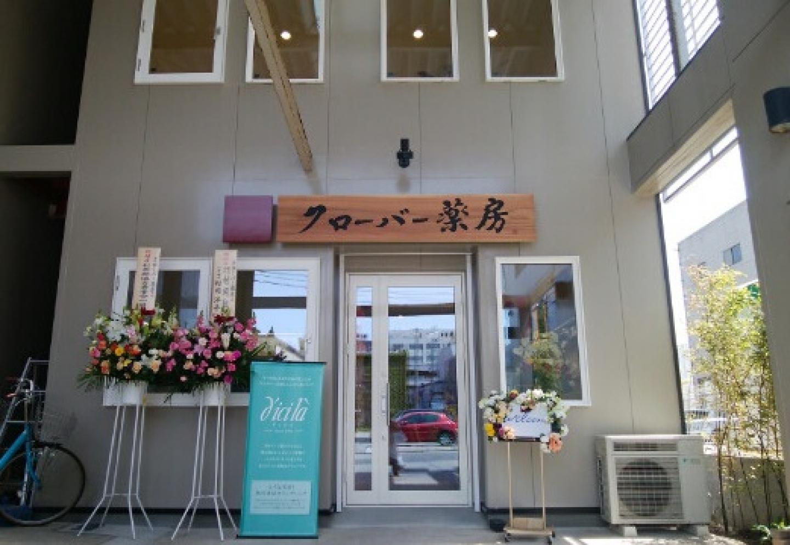
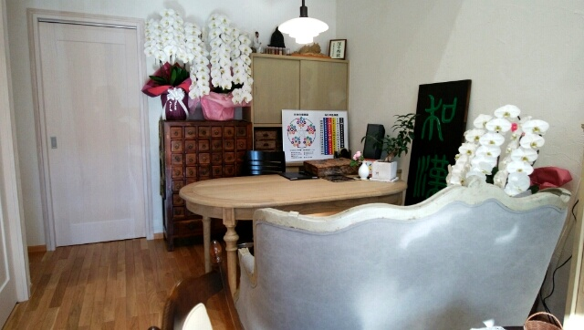

昭和26年から秋田とともに。薬局として50年余の歩み
長く続いてきたことを、これからの安心へ。クローバー薬房は、秋田の街で受け継がれてきた歩みを大切にしています。
株式会社湯澤屋の歩みは、昭和26年に始まりました。
時代とともに形を変えながら、地域の健康に寄り添ってきました。
現在は秋田市中通、秋田駅からすぐの場所で漢方相談を承っています。
クローバー薬房を営む株式会社湯澤屋の歩みは、昭和26年、秋田県湯沢市にルーツを持つ初代が「ゆざわや商店」として民芸品店を開いたことから始まります。
その後、二代目・三代目へと受け継がれ、中通で薬局を開局。かつては秋田の繁華街・川反や千秋久保田町にも支店を構え、地域の皆さまの暮らしと健康に寄り添ってまいりました。
薬局として50年余の歴史を重ね、現在は秋田駅からすぐの現在地で、漢方薬・自然薬を中心とした漢方相談薬局「クローバー薬房」を営んでいます。
時代とともに店の形や場所は変わっても、目の前のお客様のお話を丁寧に伺い、その方にとってより良い方法を一緒に考えることを大切にしてきました。

秋田駅からすぐ。秋田市中通で皆さまをお迎えしています。
私たちが大切にしていること
長く続いてきたからこそ、これからも変わらず大切にしたい想いがあります。
豊かな人生を送るためのお手伝いをいたします。
クローバー薬房では、お悩みだけを見るのではなく、これまでの経過や体調・体質、食事、睡眠、生活習慣なども丁寧にお伺いします。
そのうえで、お一人おひとりに合った漢方薬・自然薬、そして毎日の暮らしに取り入れやすい養生を一緒に考えていきます。
「困ったときに、安心して相談できる場所」であり続けること。それが、私たちの願いです。

秋田駅からすぐ。初めての方にも相談しやすい場所へ
秋田市中通・秋田駅からすぐの漢方相談薬局です。
「漢方について聞いてみたい」「自分の場合はどう考えればよいのだろう」。そんなときに、気軽に思い出していただけるお店でありたいと考えています。
漢方相談は予約優先です。お電話・メール・予約フォームからご予約いただけます。